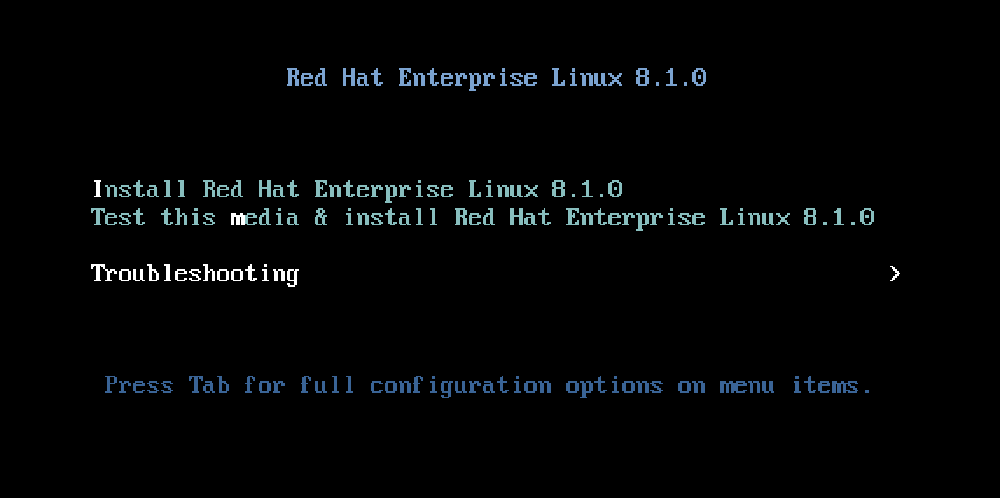
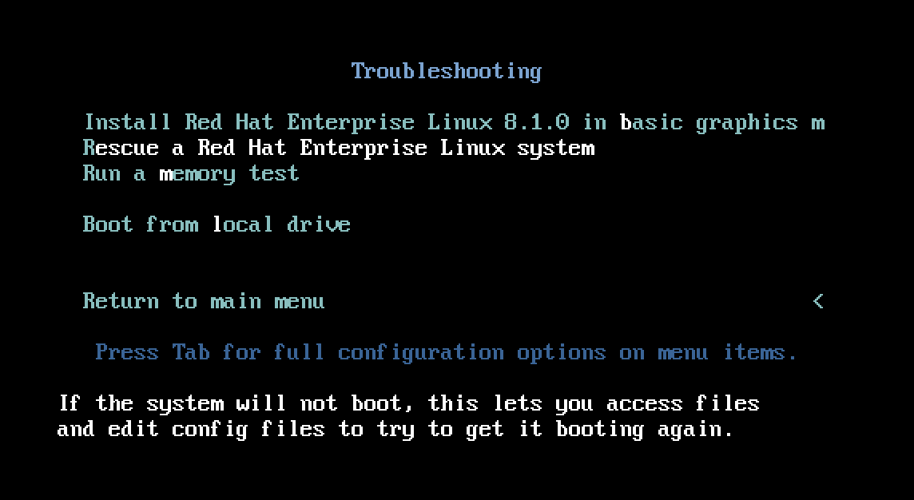
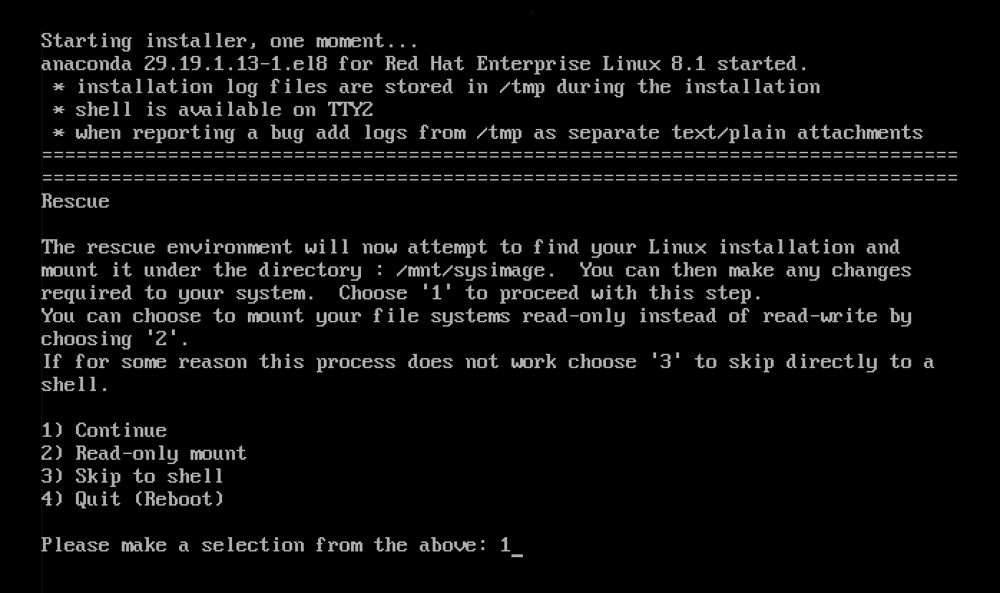
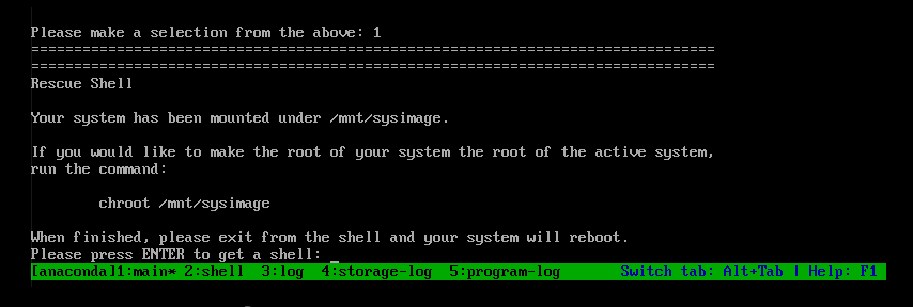
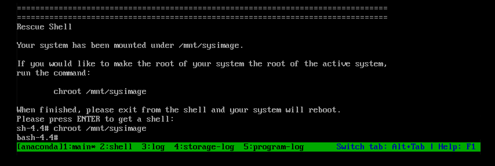
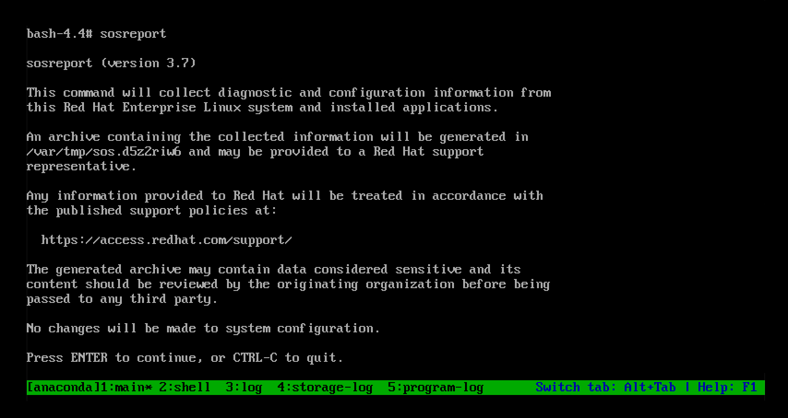
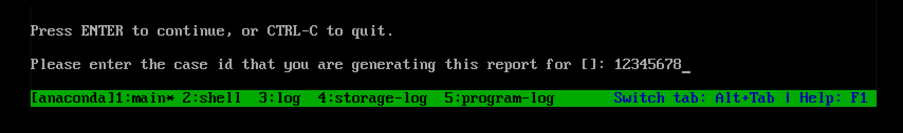
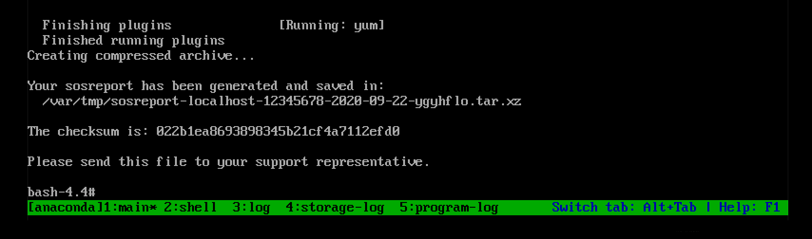
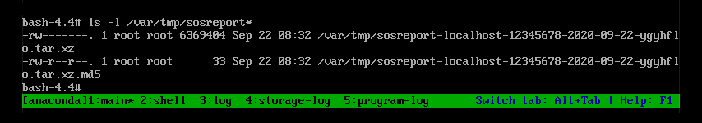

Generating sos reports for technical support
Making open source more inclusive
Red Hat is committed to replacing problematic language in our code, documentation, and web properties. We are beginning with these four terms: master, slave, blacklist, and whitelist. Because of the enormity of this endeavor, these changes will be implemented gradually over several upcoming releases. For more details, see our CTO Chris Wright’s message.
Providing feedback on Red Hat documentation
We appreciate your input on our documentation. Please let us know how we could make it better. To do so:
-
For simple comments on specific passages:
-
Make sure you are viewing the documentation in the Multi-page HTML format. In addition, ensure you see the Feedback button in the upper right corner of the document.
-
Use your mouse cursor to highlight the part of text that you want to comment on.
-
Click the Add Feedback pop-up that appears below the highlighted text.
-
Follow the displayed instructions.
-
-
For submitting more complex feedback, create a Bugzilla ticket:
-
Go to the Bugzilla website.
-
As the Component, use Documentation.
-
Fill in the Description field with your suggestion for improvement. Include a link to the relevant part(s) of documentation.
-
Click Submit Bug.
-
Generating an sos report for technical support
What the sos report utility does
An sos report is a common starting point for Red Hat technical support engineers when performing analysis of a service request for a RHEL system. The utility provides a standardized way to collect diagnostic information that Red Hat support engineers can reference throughout their investigation of issues reported in support cases. Using the sosreport utility helps to ensure that you are not repeatedly asked for data output.
The sosreport utility collects configuration details, system information, and diagnostic information from a RHEL system such as:
-
The running kernel version.
-
Loaded kernel modules.
-
System and service configuration files.
-
Diagnostic command output.
-
A list of installed packages.
The sosreport utility writes the data it collects to an archive named sosreport-<host_name>-<support_case_number>-<YYYY-MM-DD>-<unique_random_characters>.tar.xz.
The utility stores the archive and its MD5 checksum in the /var/tmp/ directory:
[root@server1 ~]# ll /var/tmp/sosreport* total 18704 -rw-------. 1 root root 19136596 Jan 25 07:42 sosreport-server1-12345678-2021-01-25-tgictvu.tar.xz -rw-r--r--. 1 root root 33 Jan 25 07:42 sosreport-server1-12345678-2021-01-25-tgictvu.tar.xz.md5
-
sosreportman page
Installing the sos package from the command line
To use the sosreport utility, install the sos package.
-
You need
rootprivileges.
-
Install the
sospackage.[root@server ~]# dnf install sos
-
Use the
rpmutility to verify that thesospackage is installed.[root@server ~]# rpm -q sos sos-3.9.1-6.el8.noarch
Generating an sos report from the command line
Use the sosreport command to gather an sos report from a RHEL server.
-
You have installed the
sospackage. -
You need
rootprivileges.
-
Run the
sosreportcommand and follow the on-screen instructions. With version 3.9 and later of thesospackage, you can add the--uploadoption to transfer thesosreport to Red Hat immediately after generating it.[user@server1 ~]$ sudo sosreport [sudo] password for user: sosreport (version 3.9) This command will collect diagnostic and configuration information from this Red Hat Enterprise Linux system and installed applications. An archive containing the collected information will be generated in /var/tmp/sos.qkn_b7by and may be provided to a Red Hat support representative. ... Press ENTER to continue, or CTRL-C to quit.
-
(Optional) If you have already opened a Technical Support case with Red Hat, enter the case number to embed it in the
sosreport file name, and it will be uploaded to that case if you specified the--uploadoption. If you do not have a case number, leave this field blank. Entering a case number is optional and does not affect the operation of thesosreportutility.Please enter the case id that you are generating this report for []: <8-digit_case_number>
-
Take note of the
sosreport file name displayed at the end of the console output.... Finished running plugins Creating compressed archive... Your sosreport has been generated and saved in: /var/tmp/sosreport-server1-12345678-2020-09-17-qmtnqng.tar.xz Size 16.51MiB Owner root md5 bba955bbd9a434954e18da0c6778ba9a Please send this file to your support representative.
|
You can use the [user@server1 ~]$ sudo sosreport --batch --case-id <8-digit_case_number> |
-
Verify that the
sosreportutility created an archive in/var/tmp/matching the description from the command output.[user@server1 ~]$ sudo ls -l /var/tmp/sosreport* [sudo] password for user: -rw-------. 1 root root 17310544 Sep 17 19:11 /var/tmp/sosreport-server1-12345678-2020-09-17-qmtnqng.tar.xz
Generating an sos report and securing it with GPG passphrase encryption
This procedure describes how to generate an sos report and secure it with symmetric GPG2 encryption based on a passphrase. You might want to secure the contents of an sos report with a password if, for example, you need to transfer it over a public network to a third party.
|
Ensure you have sufficient space when creating an encrypted
|
-
You have installed the
sospackage. -
You need
rootprivileges.
-
Run the
sosreportcommand and specify a passphrase with the--encrypt-passoption. With version 3.9 and later of thesospackage, you can add the--uploadoption to transfer thesosreport to Red Hat immediately after generating it.[user@server1 ~]$ sudo sosreport --encrypt-pass my-passphrase [sudo] password for user: sosreport (version 3.9) This command will collect diagnostic and configuration information from this Red Hat Enterprise Linux system and installed applications. An archive containing the collected information will be generated in /var/tmp/sos.6lck0myd and may be provided to a Red Hat support representative. ... Press ENTER to continue, or CTRL-C to quit.
-
(Optional) If you have already opened a Technical Support case with Red Hat, enter the case number to embed it in the
sosreport file name, and it will be uploaded to that case if you specified the--uploadoption. If you do not have a case number, leave this field blank. Entering a case number is optional and does not affect the operation of thesosreportutility.Please enter the case id that you are generating this report for []: <8-digit_case_number>
-
Take note of the sos report file name displayed at the end of the console output.
... Finished running plugins Creating compressed archive... Your sosreport has been generated and saved in: /var/tmp/secured-sosreport-server1-12345678-2021-01-24-ueqijfm.tar.xz.gpg Size 17.53MiB Owner root md5 32e2bdb23a9ce3d35d59e1fc4c91fe54 Please send this file to your support representative.
-
Verify that the
sosreportutility created an archive meeting the following requirements:-
Filename starts with
secured. -
Filename ends with a
.gpgextension. -
Located in the
/var/tmp/directory.[user@server1 ~]$ sudo ls -l /var/tmp/sosreport* [sudo] password for user: -rw-------. 1 root root 18381537 Jan 24 17:55 /var/tmp/secured-sosreport-server1-12345678-2021-01-24-ueqijfm.tar.xz.gpg
-
-
Verify that you can decrypt the archive with the same passphrase you used to encrypt it.
-
Use the
gpgcommand to decrypt the archive.[user@server1 ~]$ sudo gpg --output decrypted-sosreport.tar.gz --decrypt /var/tmp/secured-sosreport-server1-12345678-2021-01-24-ueqijfm.tar.xz.gpg
-
When prompted, enter the passphrase you used to encrypt the archive.
┌──────────────────────────────────────────────────────┐ │ Enter passphrase │ │ │ │ │ │ Passphrase: <passphrase> │ │ │ │ <OK> <Cancel> │ └──────────────────────────────────────────────────────┘
-
Verify that the
gpgutility produced an unencrypted archive with a.tar.gzfile extension.[user@server1 ~]$ sudo ls -l decrypted-sosreport.tar.gz [sudo] password for user: -rw-r--r--. 1 root root 18381537 Jan 24 17:59 decrypted-sosreport.tar.gz
-
Generating an sos report and securing it with GPG encryption based on a keypair
This procedure describes how to generate an sos report and secure it with GPG2 encryption based on a keypair from a GPG keyring. You might want to secure the contents of an sos report with this type of encryption if, for example, you want to protect an sos report stored on a server.
|
Ensure you have sufficient space when creating an encrypted
|
-
You have installed the
sospackage. -
You need
rootprivileges. -
You have created a GPG2 key.
-
Run the
sosreportcommand and specify the user name that owns the GPG keyring with the--encrypt-keyoption. With version 3.9 and later of thesospackage, you can add the--uploadoption to transfer thesosreport to Red Hat immediately after generating it.The user running the
sosreportcommand must be the same user that owns the GPG keyring used to encrypt and decrypt thesosreport. If the user usessudoto run thesosreportcommand, the keyring must also be set up usingsudo, or the user must have direct shell access to that account.[user@server1 ~]$ sudo sosreport --encrypt-key root [sudo] password for user: sosreport (version 3.9) This command will collect diagnostic and configuration information from this Red Hat Enterprise Linux system and installed applications. An archive containing the collected information will be generated in /var/tmp/sos.6ucjclgf and may be provided to a Red Hat support representative. ... Press ENTER to continue, or CTRL-C to quit.
-
(Optional) If you have already opened a Technical Support case with Red Hat, enter the case number to embed it in the
sosreport file name, and it will be uploaded to that case if you specified the--uploadoption. If you do not have a case number, leave this field blank. Entering a case number is optional and does not affect the operation of thesosreportutility.Please enter the case id that you are generating this report for []: <8-digit_case_number>
-
Take note of the
sosreport file name displayed at the end of the console output.... Finished running plugins Creating compressed archive... Your sosreport has been generated and saved in: /var/tmp/secured-sosreport-server1-23456789-2021-01-27-zhdqhdi.tar.xz.gpg Size 15.44MiB Owner root md5 ac62697e33f3271dbda92290583d1242 Please send this file to your support representative.
-
Verify that the
sosreportutility created an archive meeting the following requirements:-
Filename starts with
secured. -
Filename ends with a
.gpgextension. -
Located in the
/var/tmp/directory.[user@server1 ~]$ sudo ls -l /var/tmp/sosreport* [sudo] password for user: -rw-------. 1 root root 16190013 Jan 24 17:55 /var/tmp/secured-sosreport-server1-23456789-2021-01-27-zhdqhdi.tar.xz.gpg
-
-
Verify you can decrypt the archive with the same key you used to encrypt it.
-
Use the
gpgcommand to decrypt the archive.[user@server1 ~]$ sudo gpg --output decrypted-sosreport.tar.gz --decrypt /var/tmp/secured-sosreport-server1-23456789-2021-01-27-zhdqhdi.tar.xz.gpg
-
When prompted, enter the passphrase you used when creating the GPG key.
┌────────────────────────────────────────────────────────────────┐ │ Please enter the passphrase to unlock the OpenPGP secret key: │ │ "GPG User (first key) <root@example.com>" │ │ 2048-bit RSA key, ID BF28FFA302EF4557, │ │ created 2020-01-13. │ │ │ │ │ │ Passphrase: <passphrase> │ │ │ │ <OK> <Cancel> │ └────────────────────────────────────────────────────────────────┘
-
Verify that the
gpgutility produced an unencrypted archive with a.tar.gzfile extension.[user@server1 ~]$ sudo ll decrypted-sosreport.tar.gz [sudo] password for user: -rw-r--r--. 1 root root 16190013 Jan 27 17:47 decrypted-sosreport.tar.gz
-
Creating a GPG2 key
The following procedure describes how to generate a GPG2 key to use with encryption utilities.
-
You need
rootprivileges.
-
Install and configure the
pinentryutility.[root@server ~]# dnf install pinentry [root@server ~]# mkdir ~/.gnupg -m 700 [root@server ~]# echo "pinentry-program /usr/bin/pinentry-curses" >> ~/.gnupg/gpg-agent.conf
-
Create a
key-inputfile used for generating a GPG keypair with your preferred details. For example:[root@server ~]# cat >key-input <<EOF %echo Generating a standard key Key-Type: RSA Key-Length: 2048 Name-Real: GPG User Name-Comment: first key Name-Email: root@example.com Expire-Date: 0 %commit %echo Finished creating standard key EOF
-
(Optional) By default, GPG2 stores its keyring in the
~/.gnupgfile. To use a custom keyring location, set theGNUPGHOMEenvironment variable to a directory that is only accessible by root.[root@server ~]# export GNUPGHOME=/root/backup [root@server ~]# mkdir -p $GNUPGHOME -m 700
-
Generate a new GPG2 key based on the contents of the
key-inputfile.[root@server ~]# gpg2 --batch --gen-key key-input
-
Enter a passphrase to protect the GPG2 key. You use this passphrase to access the private key for decryption.
┌──────────────────────────────────────────────────────┐ │ Please enter the passphrase to │ │ protect your new key │ │ │ │ Passphrase: <passphrase> │ │ │ │ <OK> <Cancel> │ └──────────────────────────────────────────────────────┘
-
Confirm the correct passphrase by entering it again.
┌──────────────────────────────────────────────────────┐ │ Please re-enter this passphrase │ │ │ │ Passphrase: <passphrase> │ │ │ │ <OK> <Cancel> │ └──────────────────────────────────────────────────────┘
-
Verify that the new GPG2 key was created successfully.
gpg: keybox '/root/backup/pubring.kbx' created gpg: Generating a standard key gpg: /root/backup/trustdb.gpg: trustdb created gpg: key BF28FFA302EF4557 marked as ultimately trusted gpg: directory '/root/backup/openpgp-revocs.d' created gpg: revocation certificate stored as '/root/backup/openpgp-revocs.d/8F6FCF10C80359D5A05AED67BF28FFA302EF4557.rev' gpg: Finished creating standard key
-
List the GPG keys on the server.
[root@server ~]# gpg2 --list-secret-keys gpg: checking the trustdb gpg: marginals needed: 3 completes needed: 1 trust model: pgp gpg: depth: 0 valid: 1 signed: 0 trust: 0-, 0q, 0n, 0m, 0f, 1u /root/backup/pubring.kbx ------------------------ sec rsa2048 2020-01-13 [SCEA] 8F6FCF10C80359D5A05AED67BF28FFA302EF4557 uid [ultimate] GPG User (first key) <root@example.com>
-
For more information on GPG encryption and its uses, see the GNU Privacy Guard website.
Generating an sos report from the rescue environment
If a Red Hat Enterprise Linux (RHEL) host does not boot properly, you can boot the host into a rescue environment to gather an sos report.
Using the rescue environment, you can mount the target system under /mnt/sysimage, access its contents, and run the sosreport command.
-
If the host is a bare metal server, you need physical access to the machine.
-
If the host is a virtual machine, you need access to the virtual machine’s settings in the hypervisor.
-
A RHEL installation source, such as an ISO image file, an installation DVD, a netboot CD, or a Preboot Execution Environment (PXE) configuration providing a RHEL installation tree.
-
Boot the host from an installation source.
-
In the boot menu for the installation media, select the
Troubleshootingoption. -
In the Troubleshooting menu, select the
Rescue a Red Hat Enterprise Linux systemoption. -
At the Rescue menu, select
1and press the Enter key to continue and mount the system under the/mnt/sysimagedirectory. -
Press the Enter key to obtain a shell when prompted.
 -
Use the
chrootcommand to change the apparent root directory of the rescue session to the/mnt/sysimagedirectory. -
Run the
sosreportcommand and follow the on-screen instructions. With version 3.9 and later of thesospackage, you can add the--uploadoption to transfer thesosreport to Red Hat immediately after generating it. -
(Optional) If you have already opened a Technical Support case with Red Hat, enter the case number to embed it in the
sosreport file name, and it will be uploaded to that case if you specified the--uploadoption and your host is connected to the internet. If you do not have a case number, leave this field blank. Entering a case number is optional and does not affect the operation of thesosreportutility. -
Take note of the
sosreport file name displayed at the end of the console output. -
If your host does not have a connection to the internet, use a file transfer utility such as
scpto transfer thesosreport to another host on your network, then upload it to a Red Hat Technical Support case.
-
Verify that the
sosreportutility created an archive in the/var/tmp/directory.
-
To download an ISO of the RHEL installation DVD, visit the downloads section of the Red Hat Customer Portal. See Product Downloads.
-
Methods for providing an
sosreport to Red Hat technical support.
Methods for providing an sos report to Red Hat technical support
You can use the following methods to upload your sos report to Red Hat Technical Support.
- Upload with the
sosreportcommand -
With version 3.9 or later of the
sospackage, you can use the--uploadoption to transfer thesosreport to Red Hat immediately after generating it.-
If you provide a case number when prompted, or use the
--case-idor--ticket-numberoptions, thesosreportutility uploads thesosreport to your case after you authenticate with your Red Hat Customer Portal account. -
If you do not provide a case number or you do not authenticate, the utility uploads the
sosreport to the Red Hat public FTP site. Provide Red Hat Technical Support Engineers with the name of thesosreport archive so they can access it.
[user@server1 ~]$ sudo sosreport --upload [sudo] password for user: sosreport (version 3.9) This command will collect diagnostic and configuration information from this Red Hat Enterprise Linux system and installed applications. ... Please enter the case id that you are generating this report for []: <8-digit_case_number> Enter your Red Hat Customer Portal username (empty to use public dropbox): <Red_Hat_Customer_Portal_ID> Please provide the upload password for <user@domain.com>: ... Attempting upload to Red Hat Customer Portal Uploaded archive successfully
-
- Upload files via the Red Hat Customer Portal
-
Using your Red Hat user account, you can log into the
Support Casessection of the Red Hat Customer Portal website and upload ansosreport to a technical support case.To log in, visit Support Cases.
- Upload files using the Red Hat Support Tool
-
With the Red Hat Support Tool, you can upload a file directly from the command line to a Red Hat technical support case. The case number is required.
[user@server1 ~]$ redhat-support-tool addattachment -c <8-digit_case_number> </var/tmp/sosreport_filename>
-
For additional methods on how to provide Red Hat Technical Support with your
sosreport, such as FTP andcurl, see the Red Hat Knowledgebase article How to provide files to Red Hat Support (vmcore, rhev logcollector, sosreports, heap dumps, log files, etc.)